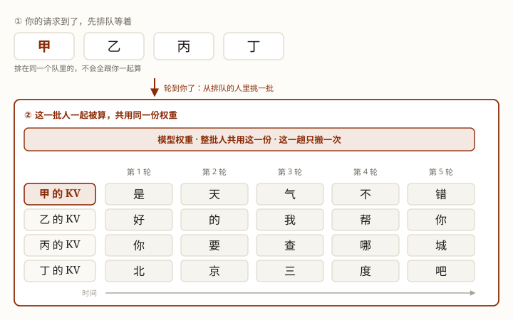

一张显卡怎么同时给几十上百个人回消息：排队、拼车，还有「多」和「快」这笔永远打架的账。
你发一个请求，等几秒，字就一个一个出来了。可那台机器只有一张显卡，它同一时刻还在给别的几十上百个人回消息。
它到底怎么做到的？你并不是在跟一大堆人抢同一台机器——你排着队，轮到你了，就跟同一批挑出来的几个人一起被算。
拆穿了就是一句大白话：它不是「同时」，是「排队 ＋ 拼车」。一趟车坐的人越多，每个人分摊的车钱就越少——这也是模型 API 能卖得便宜的原因之一。
学完这课，你能：把「一张卡怎么同时服务几十上百个人」讲明白；看懂「多」和「快」这笔账；并且知道它的天花板卡在哪。
写答案的每一轮，模型都要把权重搬一遍，而搬的时候计算单元大半在干等。整门课只问一件事：这一趟搬运，能同时服务几个人？
批越大 → 一起算的人越多、显卡越不闲，但每个人等得越久。批再往上加 → 显卡的算力已经用满，吞吐不再涨，只剩更慢。
先接上第 2 课：你发过去的那一整段输入，第 1 轮一次算完（术语叫 prefill）；之后每轮只往外蹦一个字，每蹦一个字整条流水线都要重走一遍（术语叫 decode）。本课讲的就是后面这一段。
这段话里有两个词后面一直用，先说清它们是什么：
这两样东西不是一回事（权重是尺子，KV 是量出来的数），但有一个共同点：写答案的每一轮，它们都得从显存里搬到计算单元一遍。本课讲的就是这一趟搬运。
你的请求到了服务商，先排进一条队。（这一整套动作有个名字）排在同一个队里的，不会全跟你一起算——轮到你了，服务商从当时排队的请求里挑一批（能挑多少是它自己定的），凑成一批一起上机器。忙的时候队排得长，这段等待就长，它也算进「你等第一个字等了多久」（第 2 课那条时间线里的第二段就是它）。
这一批人共用同一份权重。写答案的时候，每走一轮，这一批每人往外蹦一个字——你蹦你的，他蹦他的，各算各的、谁也串不到谁；可机器只被喂了一次权重。这一批一起被算的请求有几个，就叫「批大小」（batch size）。

那么「同时」到底是什么意思？同一批人是同一时刻、同一台机器上一起被算的——不是每人分到一张卡各自并行。只是这台机器一次只推一个字，推完一个再推下一个，一轮一轮地往前挪。
要凑的人多，批就大；深夜没什么人，批就小——那时候你很可能独自一批。
（agent 慢的时候，怎么分清它是「在队里等」还是「机器慢」，那是你自己的活：技巧篇 0002 · 技巧四）
第 2 课有个结论：写答案那一段卡在「搬数据」上，不在「算」上——要算的只有 1 个字，要搬的却是模型权重加上这一批每个人的 KV。搬数据的传送带就那么宽，所以计算单元大半在干等。
关键在这儿：每一轮要搬的那个大头是模型权重，而它跟你一个人还是四百个人没关系——不管谁来，它都得搬一遍。
要是这一轮只服务你一个，那这趟车就只为你一个人跑一趟：车大部分是空的。而「搬」这件事还省不掉（第 2 课：每一轮都得把攒下的历史整份读一遍）。
换个更好想的样子：仓库在城东、客户在城西，每送一趟货，卡车都得开完整的一趟。只送 1 个包裹太亏——油钱、司机时间一样没少。所以送货的诀窍是一趟装满 N 个包裹：车程没变，货多了 N 倍，每个包裹分摊到的车钱降到 1/N。
回到模型上就是：权重搬一次，同时服务 N 个请求——那趟「固定开销」被 N 个人分摊了。这就是 API 单价能压下来的原因之一。
以下几个名词后面会反复出现：
python exercises/llm/0004-batching.pyWindows 终端若中文乱码，先执行 chcp 65001。仍是刻意简化的量级模型，重点看相对关系。
先说清脚本用的是哪几个数——它们写在脚本开头（exercises/llm/0004-batching.py），不是实测出来的，是设的假设值：
按这三个数跑出来是这样：
| 批大小 | 每步耗时 | 吞吐 tok/s | 单请求每 token |
|---|---|---|---|
| 1 | 0.141s | 7.1 | 0.141s |
| 8 | 0.144s | 55.6 | 0.144s |
| 32 | 0.156s | 205.1 | 0.156s |
| 120 | 0.200s | 600.0 | 0.200s |
批一变大，吞吐涨得飞快，而单请求只慢了一点。这笔买卖实在太划算了——这就是为什么所有推理服务都在拼命凑批。（脚本跑出来：批 1 → 120，吞吐 84 倍，单请求慢 42%。）
200−140 = 60 GB 才装得下 KV。0.5GB 是一个请求的 KV，所以 60 ÷ 0.5 = 120，批大小最多 120。把上面那张表读一遍就是全部：批越大，机器每秒产出的字越多，但单个请求等得越久。真实世界的数字也一样——Databricks 在 A100 上测 7B 模型，批大小 64 时吞吐 14 倍、单请求延迟 4 倍，两个一起涨。
那要批多大？看你在乎哪个：聊天机器人、你的 agent，有人在盯着看，所以最在乎延迟；离线批处理（比如一口气总结一万份文档）没人盯着，最在乎吞吐。这分工不是我定的——Anyscale 的指标文档就是这么写的：要互动的场景最在乎「多久出第一个字」和「出字有多快」，批量跑的场景最在乎「每秒一共出多少字」。
但拉扯有个硬边界：批大到一定程度，瓶颈就从「搬」变成「算」。到那之后，再加大批量吞吐几乎不涨、延迟继续变差——纯亏。所以生产环境不会把批开到最大，而是挑一个最划算的批大小（Databricks 的原话是 "a balanced batch size"）。（这个拐点是怎么算出来的）
批处理只是开头。工业界又补了三招，每一招都能用一句话说清它在干嘛：
这三招都发生在服务商那边，对你写代码没有影响，知道有就行。原理在进阶版。
Q1 批处理（batching）为什么能大幅提升吞吐？
Q2 加大批大小的代价是什么？
Q3 批处理的天花板主要由什么决定？
Q4 服务商说它同时在给几十上百个人回消息，最接近真相的是？
上面这些够你看懂全貌了。读的过程中如果冒出疑问，点对应的链接就行——不用从头看进阶版。
同课进阶：进阶版 · 批从哪来、拐点、工业界的招
相关：LLM 底层 · 第 2 课 · 为什么「读长文」快、「写长文」慢？（这节的前置）· LLM 底层 · 第 3 课 · KV Cache 与「缓存命中」 · LLM 底层 · 第 8 课 · 这件事到底是谁干的（排队拼车在四层里归谁管）
你会用到：技巧篇 0002 · 怎么判断一个 agent 好不好用（agent 慢的时候怎么分清是在排队还是在算）
主线：Agent 原理篇 · 第 1 课 · Agent 到底是什么 → 下一步 工具调用（Tool Use）。
术语表：批处理 · 批大小 · 排队 · 吞吐 · 连续批处理。